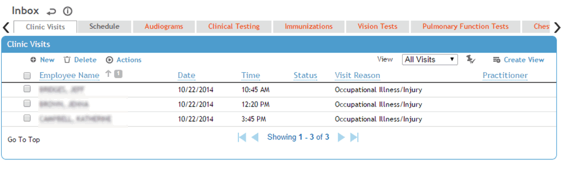

The Clinic Visits tab lists all the clinic visits scheduled for the selected date (defaults to today’s date but can be changed). This list is the same as the Clinic Visits list in that module, and refreshes every two minutes. For more information, see Working with Clinic Visits.
To view a particular visit, click the employee name link.

To view the employee’s entire medical chart, select the record’s checkbox and choose Actions»Go to Employee’s Medical Chart (see Working with the Medical Chart for more information).
To see all unsigned clinic visit notes, choose Actions»Review Unsigned Notes.